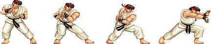

如果让一些不太了解前端开发的程序员来投票，选出他们眼中JavaScript语言在Web开发中的两大用途，我想结果很有可能是这样的：
编写一些让div飞来飞去的动画
验证表单
虽然这只是一句玩笑话，但从中可以看到动画在Web前端开发中的地位。一些别出心裁的动画效果可以让网站增色不少。
有一段时间网页游戏非常流行，HTML5版本的游戏可以达到不逊于Flash游戏的效果。我曾经编写过HTML5版本的街头霸王游戏，让游戏的主角跳跃或是移动，实际上只是让这个div按照一定的缓动算法进行运动而已。
如果我们明白了怎样让一个小球运动起来，那么离编写一个完整的游戏就不遥远了，剩下的只是一些把逻辑组织起来的体力活。本节并不会从头到尾地编写一个完整的游戏，我们首先要做的是让一个小球按照不同的算法进行运动。
用JavaScript实现动画效果的原理跟动画片的制作一样，动画片是把一些差距不大的原画以较快的帧数播放，来达到视觉上的动画效果。在JavaScript中，可以通过连续改变元素的某个CSS属性，比如left、top、background-position来实现动画效果。图5-1就是通过改变节点的background-position，让人物动起来的。

图 5-1
我们目标是编写一个动画类和一些缓动算法，让小球以各种各样的缓动效果在页面中运动。
现在来分析实现这个程序的思路。在运动开始之前，需要提前记录一些有用的信息，至少包括以下信息： * 动画开始时，小球所在的原始位置；
小球移动的目标位置；
动画开始时的准确时间点；
小球运动持续的时间。
随后，我们会用setInterval创建一个定时器，定时器每隔19ms循环一次。在定时器的每一帧里，我们会把动画已消耗的时间、小球原始位置、小球目标位置和动画持续的总时间等信息传入缓动算法。该算法会通过这几个参数，计算出小球当前应该所在的位置。最后再更新该div对应的CSS属性，小球就能够顺利地运动起来了。
在实现完整的功能之前，我们先了解一些常见的缓动算法，这些算法最初来自Flash，但可以非常方便地移植到其他语言中。
这些算法都接受4个参数，这4个参数的含义分别是动画已消耗的时间、小球原始位置、小球目标位置、动画持续的总时间，返回的值则是动画元素应该处在的当前位置。代码如下：
var tween = {
linear: function( t, b, c, d ){
return c*t/d + b;
},
easeIn: function( t, b, c, d ){
return c * ( t /= d ) * t + b;
},
strongEaseIn: function(t, b, c, d){
return c * ( t /= d ) * t * t * t * t + b;
},
strongEaseOut: function(t, b, c, d){
return c * ( ( t = t / d - 1) * t * t * t * t + 1 ) + b;
},
sineaseIn: function( t, b, c, d ){
return c * ( t /= d) * t * t + b;
},
sineaseOut: function(t,b,c,d){
return c * ( ( t = t / d - 1) * t * t + 1 ) + b;
}
};
现在我们开始编写完整的代码，下面代码的思想来自jQuery库，由于本节的目标是演示策略模式，而非编写一个完整的动画库，因此我们省去了动画的队列控制等更多完整功能。
现在进入代码实现阶段，首先在页面中放置一个div：
<body>
<div style="position:absolute;background:blue" id="div">我是div</div>
</body>
接下来定义Animate类，Animate的构造函数接受一个参数：即将运动起来的dom节点。Animate类的代码如下：
var Animate = function( dom ){
this.dom = dom; // 进行运动的dom节点
this.startTime = 0; // 动画开始时间
this.startPos = 0; // 动画开始时，dom节点的位置，即dom的初始位置
this.endPos = 0; // 动画结束时，dom节点的位置，即dom的目标位置
this.propertyName = null; // dom节点需要被改变的css属性名
this.easing = null; // 缓动算法
this.duration = null; // 动画持续时间
};
接下来Animate.prototype.start方法负责启动这个动画，在动画被启动的瞬间，要记录一些信息，供缓动算法在以后计算小球当前位置的时候使用。在记录完这些信息之后，此方法还要负责启动定时器。代码如下：
Animate.prototype.start = function( propertyName, endPos, duration, easing ){
this.startTime = +new Date; // 动画启动时间
this.startPos = this.dom.getBoundingClientRect()[ propertyName ]; // dom节点初始位置
this.propertyName = propertyName; // dom节点需要被改变的CSS属性名
this.endPos = endPos; // dom节点目标位置
this.duration = duration; // 动画持续事件
this.easing = tween[ easing ]; // 缓动算法
var self = this;
var timeId = setInterval(function(){ // 启动定时器，开始执行动画
if ( self.step() === false ){ // 如果动画已结束，则清除定时器
clearInterval( timeId );
}
}, 19 );
};
Animate.prototype.start方法接受以下4个参数。
propertyName：要改变的CSS属性名，比如'left'、'top'，分别表示左右移动和上下移动。
endPos： 小球运动的目标位置。
duration： 动画持续时间。
easing： 缓动算法。
再接下来是Animate.prototype.step方法，该方法代表小球运动的每一帧要做的事情。在此处，这个方法负责计算小球的当前位置和调用更新CSS属性值的方法Animate.prototype.update。代码如下：
Animate.prototype.step = function(){
var t = +new Date; // 取得当前时间
if ( t >= this.startTime + this.duration ){ // (1)
this.update( this.endPos ); // 更新小球的CSS属性值
return false;
}
var pos = this.easing( t - this.startTime, this.startPos,
this.endPos - this.startPos, this.duration );
// pos为小球当前位置
this.update( pos ); // 更新小球的CSS属性值
};
在这段代码中，(1)处的意思是，如果当前时间大于动画开始时间加上动画持续时间之和，说明动画已经结束，此时要修正小球的位置。因为在这一帧开始之后，小球的位置已经接近了目标位置，但很可能不完全等于目标位置。此时我们要主动修正小球的当前位置为最终的目标位置。此外让Animate.prototype.step方法返回false，可以通知Animate.prototype.start方法清除定时器。
最后是负责更新小球CSS属性值的Animate.prototype.update方法：
Animate.prototype.update = function( pos ){
this.dom.style[ this.propertyName ] = pos + 'px';
};
如果不嫌麻烦，我们可以进行一些小小的测试：
var div = document.getElementById( 'div' );
var animate = new Animate( div );
animate.start( 'left', 500, 1000, 'strongEaseOut' );
// animate.start( 'top', 1500, 500, 'strongEaseIn' );
通过这段代码，可以看到小球按照我们的期望以各种各样的缓动算法在页面中运动。
本节我们学会了怎样编写一个动画类，利用这个动画类和一些缓动算法就可以让小球运动起来。我们使用策略模式把算法传入动画类中，来达到各种不同的缓动效果，这些算法都可以轻易地被替换为另外一个算法，这是策略模式的经典运用之一。策略模式的实现并不复杂，关键是如何从策略模式的实现背后，找到封装变化、委托和多态性这些思想的价值。